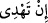
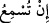

âyetlerimize inanıp da teslim olanlara duyurabilirsin.
“Sen körleri sapıklıklarından çevirip doğru yola” matlûba ulaştıracak bir hidâyete
“getiremezsin.” Çünkü hidâyete ermek/doğru yolu bulmak ancak gözle olur.
“__WORD__ kelimesi, “__WORD__nın çoğuludur. “__WORD__ ise görme duyusunu yitirmek demektir.
Burada, basîretini kaybeden kimse, hidâyete nâil olamama/yol bulamama konusunda
gözünü kaybeden/kör kimseye benzetilmiştir.
el-Müfredât’ta der ki: “Allah Teâlâ, basîretin kaybı yanında gözün kaybedilmesini
körlük saymamış ve: “Ama gerçek şu ki, gözler kör olmaz; lâkin göğüsler içindeki
kalbler kör olur.” (el-Hac, 22/46) buyurmuştur.
“Ancak âyetlerimize inanıp da teslim olanlara” Allah’ın ilminde böyle olan
kimselere, yâni işi, onlara îman olup hakka ve emre boyun eğenlere, yakîn âleminin
muhlis ve mütehassıslarına, işitene fayda sağlayacak şekilde “duyurabilirsin.”
Hidâyetin yolu, tenzîlî âyetleri işittirmek olunca, hidâyet yakında zikredildiği halde
âyette “
(Ancak … doğru yola iletebilirsin)” değil “__WORD__ (Ancak…
duyurabilirsin) buyruldu.
Bâtın kulağını Kur’ân’a dayamış
Gönül gözünü irfana açmış
Kuds bahçesinin esintileriyle diri
Üns ve dostluk mekânında i’tikâfa çekilmiş
Şu halde aslolan ezelî inâyet/yardım ve Allah’ın ilminde geçen ebedî saâdettir.
Rivâyet edildiğine göre Hz. Peygamber (s.a.) minbere çıktı. Sağ avucunu yumdu ve
şöyle buyurdu: “Bu, Allah’ın cennet ehlinin isimlerini, neseblerini yazıp topladığı bir
kitaptır. Ona ne bir şey eklenebilir, ne de ondan bir şey eksiltilebilir.” Sonra sol
avucunu yumdu ve şöyle buyurdu: “Bu, Allah’ın cehennem ehlinin isimlerini,
babalarının isimlerini yazıp topladığı bir kitaptır. Ona ne bir şey eklenebilir, ne de
ondan bir şey eksiltilebilir. Saâdet ehli şakâvet ehlinin amelini işler de sonunda
‘Sanki onlar onlardan (şakâvet ehlinden)’ denir. Bilakis onlar saâdet ehlidir. Sonra
devenin iki sağımı arası kadar bir zaman da kalsa Allah onları ölümden önce mutlaka
kurtarır. Şakâvet ehli saâdet ehlinin amelini işler de sonunda ‘Sanki onlar onlardan
(saâdet ehlinden)’ denir. Bilakis onlar şakâvet ehlidir. Bilakis onlar şakâvet ehlidir.
Sonra devenin iki sağımı arası kadar bir zaman da kalsa Allah onları (saâdet ehlinin
içinden) mutlaka çıkarır. Saîd, Allah’ın kazası/takdiri ile saâdette olandır. Şakî,
Allah’ın kazası/takdiri ile şekavete düşendir. Ameller, kişilerin son durumlarına göre
değerlendirilir.”[75]
Rivâyet edildiğine göre Allah Rasûlü (s.a.) şöyle anlattı: İsrailoğulları içinde bir
zâhid vardı. İki yüz yıl ibâdet etmişti. Onun arzusu İblis’i görmek ve ona: “Allah’a
şükürler olsun ki şu iki yüz yıl boyunca bana ilişmedin ve beni Hak yoldan